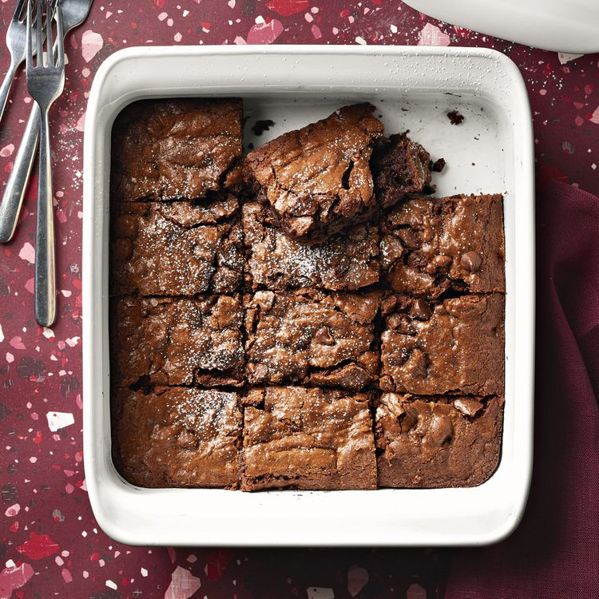

Lasagna

Description
A chocolate brownie is a rich, dense, and fudgy baked dessert made from a combination of melted chocolate, butter, sugar, eggs, and flour. Its texture is typically soft and chewy, with a slightly crispy top that gives way to a moist, gooey interior. Brownies have an intense chocolate flavor, often enhanced with a touch of vanilla extract or a sprinkle of salt. They can be enjoyed plain or with added ingredients like walnuts, pecans, or chocolate chips for extra texture and taste. Served warm or at room temperature, brownies are often paired with a scoop of vanilla ice cream, a drizzle of chocolate sauce, or a dusting of powdered sugar, making them a favorite indulgence for chocolate lovers.
Ingredients
- 3 cups white sugar
- 1 cup butter, melted
- 1 tablespoon vanilla extract
- 4 eggs
- 1 ½ cups all-purpose flour
- 1 cup unsweetened cocoa powder
- 1 teaspoon salt
- 1 cup semisweet chocolate chips
Steps
- Preheat the oven to 350 degrees F (175 degrees C). Lightly grease a 9x13-inch baking dish.
- Combine sugar, melted butter, and vanilla in a large bowl. Beat in eggs, one at a time, mixing well after each addition, until thoroughly blended.
- Sift flour, cocoa powder, and salt into a separate large bowl. Gradually stir flour mixture into egg mixture until blended; stir in chocolate chips. Spread batter evenly into the prepared baking dish.
- Bake in the preheated oven until top is dry and edges have started to pull away from the sides of the pan, about 35 to 40 minutes. Let cool completely before slicing into 24 squares.
Back to Home